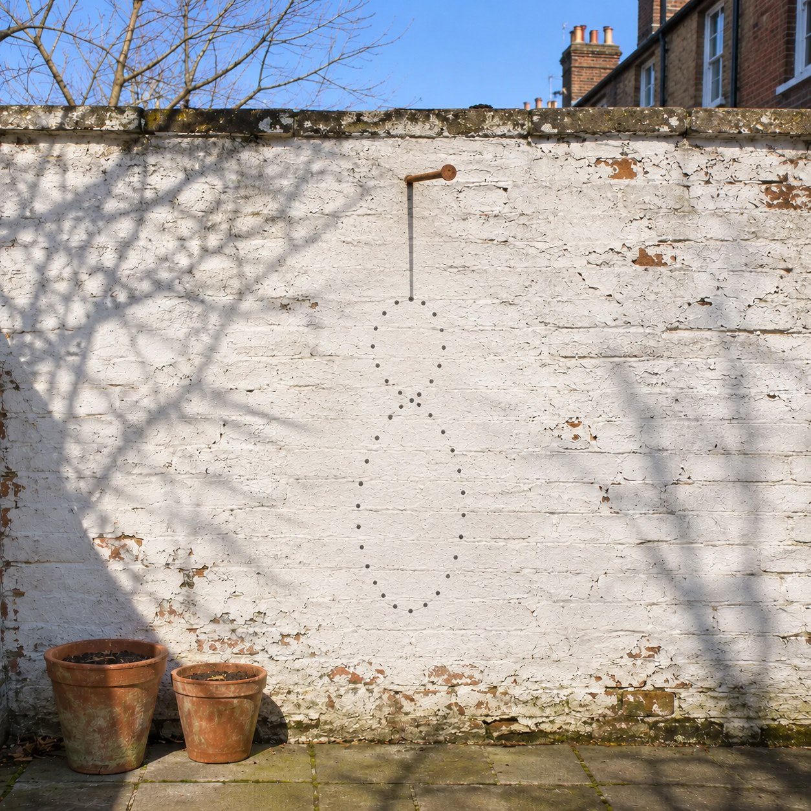
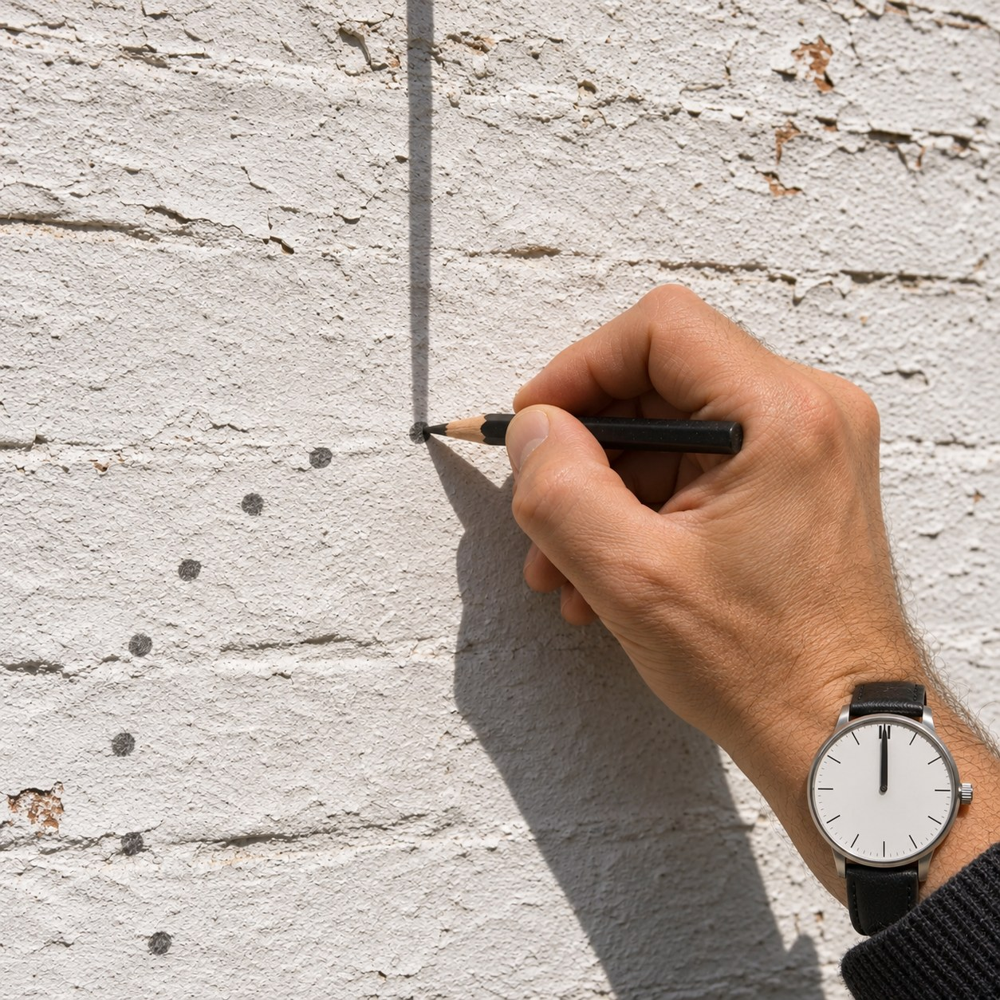

Where Noon Fell


Noon is meant to be the moment the sun stands highest, due south, and every shadow is at its shortest. The clock says this happens at twelve. The sun does not agree.
On the whitewashed wall at the back of the house there is an old iron nail. For a year, on every day the sun came out, I made a pencil dot at the tip of its shadow at exactly twelve by my watch. I kept the watch on winter time all year, so that the only thing allowed to move was the sun.
If the clock and the sun agreed, the dots would run in one straight line, high on the wall in winter and low in summer. They make a figure eight instead, tall and a little lopsided. In February the shadow comes late, in November early, by about a quarter of an hour either way. The earth leans, and its path round the sun is not quite a circle, so the days from noon to noon are not all the same length. The clock adds up the year's days and gives each one the average.
It was not always like this. Every town once kept its own noon, set by its own sun, and Bristol ran some ten minutes behind London. Then the trains needed one timetable. From 1840 the Great Western Railway ran on London time, and by 1880 the whole country did, by law. Since then noon has happened everywhere at once, which is to say nowhere in particular.
The eight on the wall is the shape of that agreement. Each dot is the gap between the day we keep and the day that comes.
I still look at my watch to know when it is noon. Then I look at the wall. Which of them is telling the time?